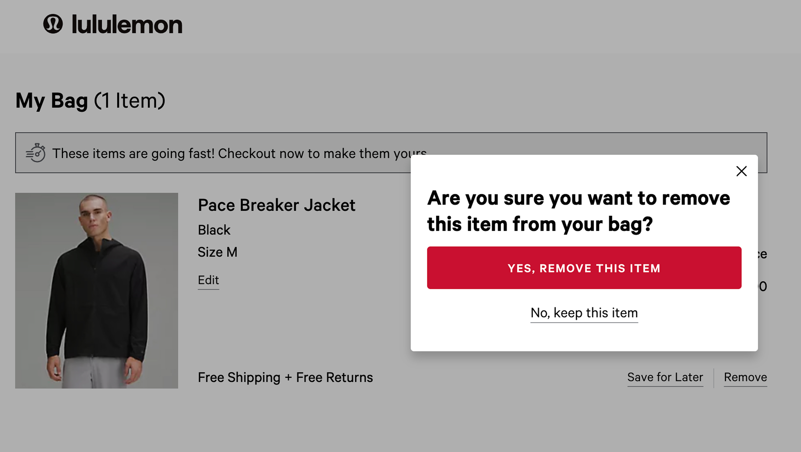
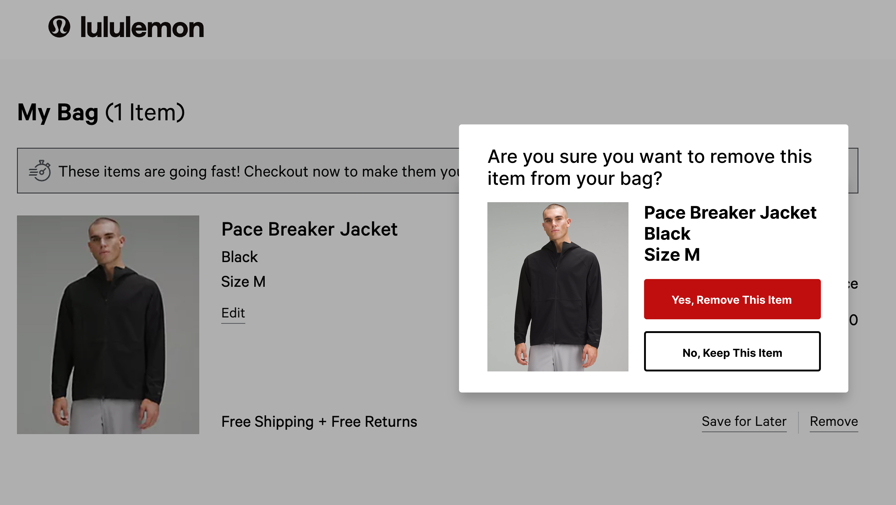
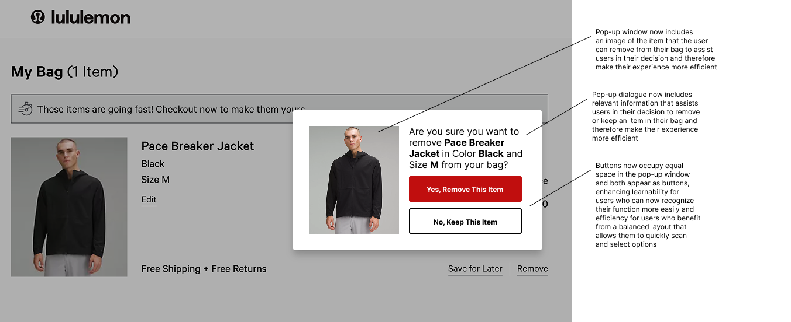
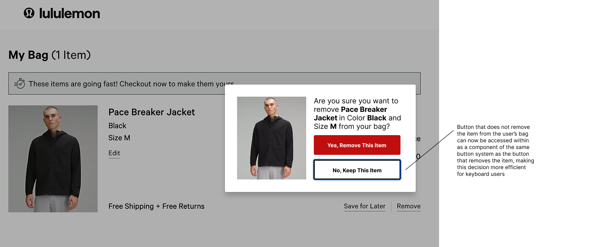

Rethinking how pop-up windows can maximize and balance learnability, memorability, efficiency and accessibility
BEFORE
AFTER


Kat Holmes defines mismatches as moments where human interactions are hindered by an absence of appropriate design solutions.
This case study looks at three everyday instances of pop-up windows with a design thinking approach, identifying and resolving potential mismatches.
1
TIKTOK SHOP


These screenshots demonstrate the varying states of a TikTok Shop pop-up when using an iPhone's native VoiceOver screen reader.
2
BROWN UNIVERSITY ADVISING SIDEKICK


These screenshots demonstrate the varying states of a Brown Advising Sidecick pop-up that occurs when the user has requested that a concentration declaration be deleted.
3
LULULEMON


These screenshots demonstrate the varying states of a lululemon pop-up that appears after a user has selected the 'Remove' button on an item in their cart.
The first is the default state of the pop-up, the second occurs when a mouse hovers over the "YES, REMOVE THIS ITEM" button and the third occurs when the "YES, REMOVE THIS ITEM" button has been selected using the keyboard.
part 1: input
the functionality of each of these components differs based on (mode of) input,as shown in the following table
| ASK | lululemon | TikTok Shop | |
|---|---|---|---|
| mouse or touchpad |
• hovering over the ‘Cancel’ button makes the button turn gray • the ‘OK’ button does not change colors when the mouse hovers over it |
• hovering over the ‘Yes, remove this item’ button makes the
button turn into a darker red • the line under ‘No, keep this item’ turns red when the mouse hovers over it |
|
| keyboard |
• hitting the ‘Enter’ button activates the ‘OK’ button • hitting the ‘esc’ button activates the ‘Cancel’ button |
• hitting the ‘Enter’ button activates the ‘Yes, remove this item’
button • hitting the ‘esc’ button removes the window and changes nothing |
|
| touch |
• the only tappable elements are the ‘Shop now,’ ‘Terms apply,’
and ‘x’ buttons • the ‘Shop now’ and ‘x’ buttons do the same thing |
part 2: output
while inputs change the internal state of a component, outputs are a representation of these changes in state.outputs help to reveal the purpose of and current accessibility considerations for a component,
as shown in the following table
| ASK | lululemon | TikTok Shop | |
|---|---|---|---|
| screen reader |
• the screen reader reads the text located above the buttons and
automatically selects the ‘OK’ button, reading the title of the
button and then ‘You are currently on a Button. to click this
button, press control-option-space.’ • the user can use the arrow keys to modify which button the screen reader reads, pressing left to switch to the ‘Cancel’ button. |
• the screen reader reads the text located above the buttons and
automatically selects the ‘Yes, remove this item’ button, reading
the title of the button and then ‘You are currently on a Button.
to click this button, press control-option-space.
• the user cannot use the arrow keys to switch which button the screen reader reads. |
• the screen reader reads the buttons and makes playful noises when switching between buttons. |
part 3: state models
using these observations about potential interactions with and accessibility considerations for the pop-up windows,we can create state models to visualize how a user may interact with the lululemon pop-up window
mouse & keyboard state models for the lululemon pop-up window as it currently exists

revised mouse & keyboard state models for the lululemon pop-up window

revised lululemon pop-up window in the "default" state
revised lululemon pop-up window in the "focused" state
part 5: reflection
• the components I observed were generally successful in
usability/accessibility because they had hover states for mouse users.
these color changes help users be aware of the location of their mouse
and therefore understand interactions. I kept these in my final design
because I want to maximize accessibility and usability for users.
• the components I observed also had support for screen readers, which
read button labels and provided instructions for interaction for
accessibility. I wanted to maintain this accessibility in my final
design as well.
• the original design of the lululemon pop-up lacked contextual
information. adding this information enhances users’ decision-making
ability and therefore solves the previous mismatch in design which may
have prompted users to make the wrong decision.
• I also believe the unequal button spacing made navigation less
intuitive, so I changed them to occupy equal space and clearly appear
as interactive elements, improving learnability and efficiency.
• my changes also strengthened accessibility for keyboard users,
ensuring that all users have an equitable experience.
• the added item image and descriptive text provide more context,
reducing uncertainty for visually impaired users who may have not
known which item they chose to remove in the first place.
• I think the consistent button sizes and placement improve usability
for users with cognitive impairments by reducing the cognitive load
required to make the keep/remove decision.
• I think mouse and touch interactions are prioritized in UI design,
often at the expense of keyboard and screen reader users. I can work
towards a more inclusive and efficient user experience for all by
including keyboard users and screen reader interactions in my design.